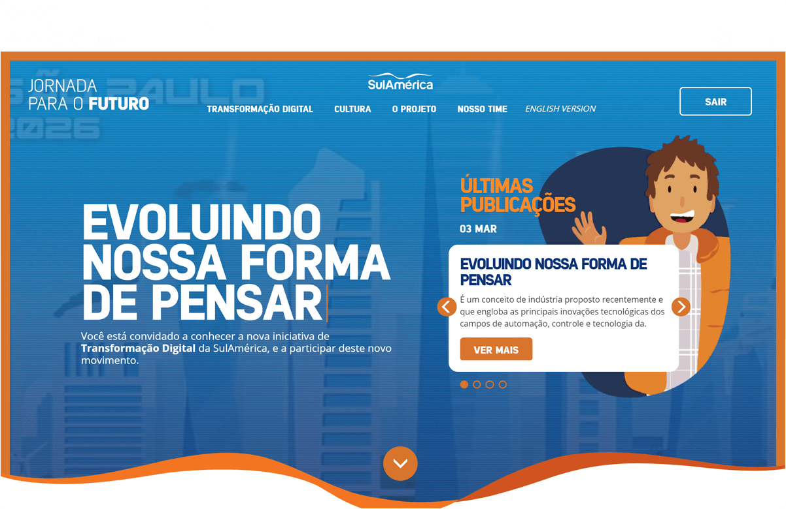
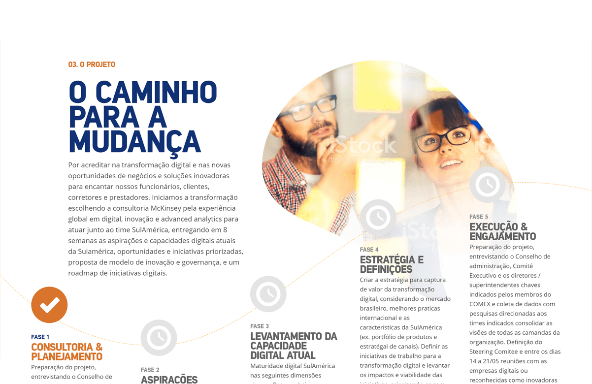
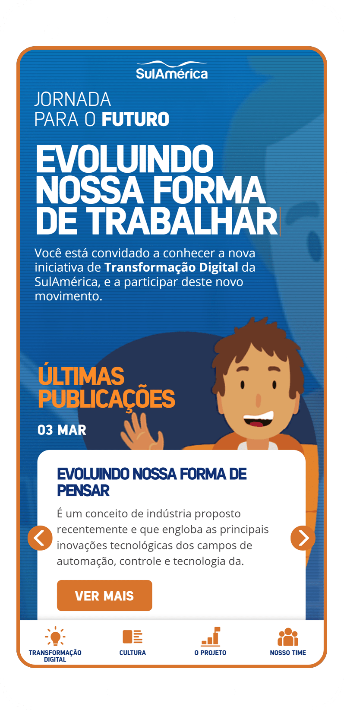

<div class="modal__wrapper">
<div class="modal__scroller">
<div class="modal__header">
<h2 class="modal__title">Jornada para o Futuro</h2>
<h3 class="modal__tags">
<span class="modal__tag">UX</span>
<span class="modal__tag">Front End</span>
</h3>
</div>
<div class="modal__content">
<div class="modal__editable">
<p>
Sulamerica, one of the biggest insurance companies in Brazil, needed to tackle an internal innovation project: how to communicate its Digital Transformation process as a company, from old school insurance giant to a more modern and connected institution. I was responsible for all the concept, UX and front end development and had only one week to do everything. This was always something I could take pride of in my work: to consistently deliver solid projects in record time.
</p>
<p>We ended up with a single page website that captured the new, innovative stance they were now assuming, even with the time constraint.</p>
<figure class="modal__image--full">

</figure>
<figure class="modal__image--full">

</figure>
<figure class="modal__image--small">

</figure>
</div>
</div>
</div>
</div>
